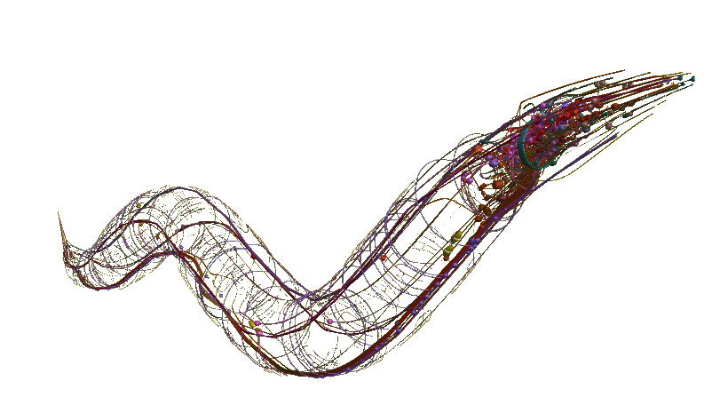

internet, world wide web, telecomunication grids...
neurons, chemical reactions, species...
friendship networks, neighborhoods, facebook...
a convergence of fields led to what now is known as network science
a graph, a simple mathematical abstraction
with infinite applications
and infinite forms

(Reddit comment thread trees, one is real, the other was generated. You can read more about my work on the subject here.)
that enables us to see nature in its true complexity
and empowers us to attempt comprehension
One of the most influential - and cited - modern researchers. Known for many of his contributions to the field, specially related to scaling and organization of random networks.
Sebastian Seung. Are we more than the connections of our neurons?
 The OpenWorm ProjectNicholas Christakis, "how the large-scale, face-to-face social networks in which we are embedded affect our lives, and what we can do to take advantage of this fact."
James B. Glatteferder, a data-driven approach to understanding the global economy through the study of its complex relationships.
I hope you have learned something new today!
Network science, the study of complexity, a new interdisciplinary field with a future promising to challenge exactly how we see the world.
Presentation by Pedro Boueke, August 2017